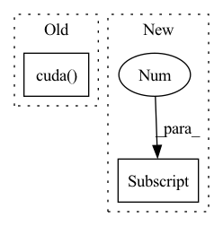

Pattern ID :3628
Before Change
mask = 1 - mask
mask = mask.expand_as(x)
if self.offset:
offset = torch.from_numpy(2 * (np.random.rand(h, w) - 0.5)).to(
x.dtype).cuda()
x = x * mask + offset * (1 - mask)
else:
x = x * mask
After Change
mask[:, s:t] *= 0
r = np.random.randint(self.rotate)
mask = rotate(mask.unsqueeze(0), r)[0]
mask = mask[(hh - h) // 2:(hh - h) // 2 + h,
(ww - w) // 2:(ww - w) // 2 + w]
mask = mask.to(x.dtype)
if self.mode == 1:In pattern: SUPERPATTERN
Frequency: 3
Non-data size: 2
Instances Fragment ID: 17808262
Project Name: alibaba/easycv
Commit Name: f8c9a9a1c958b17554827f0bac33cab069b72735
Time: 2022-11-23
Author: 30484308+Cathy0908@users.noreply.github.com
File Name: easycv/models/detection3d/utils/grid_mask.py
M Class Name: GridMask
N Class Name: GridMask
M Method Name: forward(2)
N Method Name: forward(2)
M Parent Class: nn.Module
N Parent Class: nn.Module
M File Name: easycv/models/detection3d/utils/grid_mask.py
N File Name: easycv/models/detection3d/utils/grid_mask.py
M Start Line: 116
M End Line: 143
N Start Line: 117
N End Line: 141
Before Change
// 下面是使用CFR
crf_model = CRF(self.num_token_type, batch_first=True)
if USE_CUDA:
crf_model = crf_model.cuda()
if not is_test:
log_likelihood = crf_model(ner_score, data_item["token_type_list"].to(torch.int64),
mask=data_item["mask_tokens"])
loss_ner = -log_likelihoodAfter Change
// 这样计算交叉熵有问题吗
// 交叉熵计算不适用 rel_score_prob， 应该是rel_score_matrix
loss_rel = F.cross_entropy(rel_score_prob.permute(0, 3, 1, 2), data_item["pred_rel_matrix"], self.weights_rel) // 要把分类放在第二维度
loss_rel *= rel_score_prob.shape[1]
rel_score_prob = rel_score_prob - (self.config.threshold_rel - 0.5) // 超过了一定阈值之后才能判断关系
pred_rel = torch.round(rel_score_prob).to(torch.int64)
// print("hello2")
if is_test: Fragment ID: 17808261
Project Name: mangonihao/multiheadjointentityrelationextraction_simple
Commit Name: 3a8d46652627013ee302506e87489ee75fea8ae9
Time: 2021-03-08
Author: 2075419247@qq.com
File Name: modules/joint_model.py
M Class Name: JointModel
N Class Name: JointModel
M Method Name: forward(4)
N Method Name: forward(4)
M Parent Class: nn.Module
N Parent Class: nn.Module
M File Name: modules/joint_model.py
N File Name: modules/joint_model.py
M Start Line: 128
M End Line: 139
N Start Line: 130
N End Line: 165
Before Change
ce_loss_t = -torch.sum(one_hot_labels * log_softmax_t, 1, keepdim=True)
focal_weight = ce_loss_s / (ce_loss_t + 1e-7)
ratio_lower = torch.zeros(1).cuda()
focal_weight = torch.max(focal_weight, ratio_lower)
focal_weight = 1 - torch.exp(-focal_weight)
ce_loss = focal_weight * ce_loss
After Change
def forward(self, student, teacher, data_samples):
// Unpack data samples and pack targets
if "score" in data_samples[0] .gt_label:
// Batch augmentation may convert labels to one-hot format scores.
gt_labels = torch.stack([i.gt_label.score for i in data_samples])
one_hot_labels = gt_labels.float() Fragment ID: 17808260
Project Name: open-mmlab/mmrazor
Commit Name: cb238e36e3d68bc64cfa0da7d5c12d749b7043a2
Time: 2022-07-15
Author: 67539920+pppppM@users.noreply.github.com
File Name: mmrazor/models/losses/weighted_soft_label_distillation.py
M Class Name: WSLD
N Class Name: WSLD
M Method Name: forward(4)
N Method Name: forward(3)
M Parent Class: nn.Module
N Parent Class: nn.Module
M File Name: mmrazor/models/losses/weighted_soft_label_distillation.py
N File Name: mmrazor/models/losses/weighted_soft_label_distillation.py
M Start Line: 32
M End Line: 52
N Start Line: 30
N End Line: 60